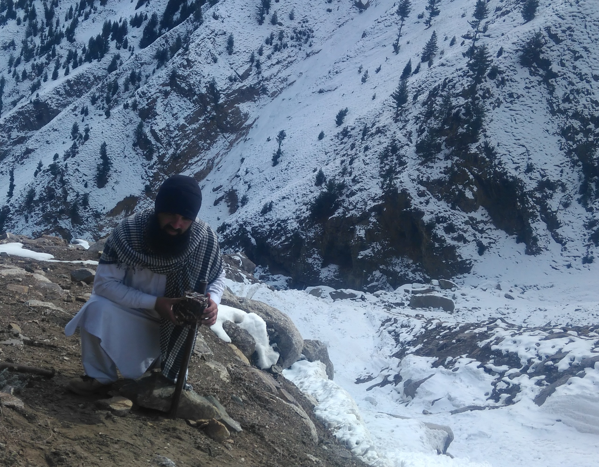

About Me
Let me briefly introduce myself
I started a joint PhD on November 04, 2024 between University of Copenhagen and University of Adelaide under the supervision of Professsor Carsten Rahbek and Associate Professor Damien Fordham. The research will try to investigate recovery of large bodied herbivores and their ecosystem services using process-based models.
I have my second masters MSc Applied Data Science (Ecology and Evolution) at University of Exeter Penryn Campus, Cornwall England. I did my dissertation project on Differential Gene Expression in Japanese Quails, under the supervision of Dr Bram Kuijper.
Before coming to University of Exeter, I got my first master degree in Zoology with Wildlife Ecology major from Quaid-i-Azam University Islamabad, Pakistan. As this was a research based degree, I conducted intensive field work utilizing Camera trapping and non-invasive genetic sampling to document the abundance and density of Mammals with a focus on large carnivores and there prey species. I worked in the rugged and inhospitable mountainous terrain of Himalayas and Hindukush across Northern Pakistan. All of these fields were carried out under the supervision and generous support of Dr Muhammad Ali Nawaz.
Astore Camera Trapping November 2018.
I am active on Twitter and regularly re-tweet PhD opportunities relevant to Ecology and Evolution; occasionally for other subjects too.